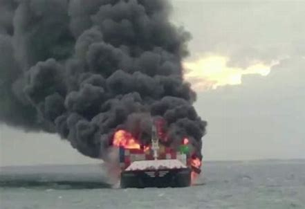
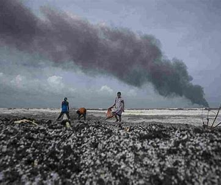
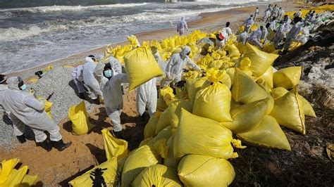
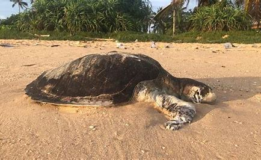

the ship MV X-Press Pearl finally sank about 9.5 nautical miles
from the Colombo harbour. It has not sunk fully because it is touching
a coral bed. The ship had been burning from May 20; an explosion six days
later brought disaster in the form of small white plastic pellets spread around
almost one third of the coastline from Galle to Kalpitiya. The pellets are low
density polyethylene plastic nurdles.

The busy East-West shipping route passes six to ten nautical miles south of
the country. More than 60,000 ships ply this route annually carrying two thirds
of the world’s oil and half its container shipments. Although there are thousands
of ships passing by Sri Lanka every day, major ship accidents are rare.


The Singapore-flagged cargo vessel was carrying a consignment
of hazardous chemicals including nitric acid, ethanol, lead ingots, dust
urea, frilled urea, high density and low density polyethylene (46 containers),
epoxy resins (349 containers), sodium methoxide, caustic soda (42 containers),
aluminum processing byproducts, raw materials for cosmetics, food items and
general cargo from Qatar and Gujarat to the Colombo port. The ship also had 300
tonnes of bunker oil. With the sinking of the ship, the release of the chemicals
is a serious risk to the ocean and the coastal ecosystem.
Nitric acid will damage the corals and ocean life as it is a highly corrosive chemical. It is a very dangerous acid.
The ship caught fire 9.5 nautical miles from the coast.
Sri Lankan authorities who tried to manage the fire failed and
there was an explosion on the morning of May 26. The fire was
only controlled after Indian emergency support joined the mission
on May 27. The Sri Lankan effort failed due to the lack of an emergency
response system, lack of safety procedures, relevant expertise and lack
of tools and equipment. Failure of other countries to assist Sri Lanka seems
part of the negligence. There is a clear violation of the International Convention
for Prevention Pollution from Ships (MARPOL Convention), which Sri Lanka
ratified in 1997, that seeks to handle harmful substances.
and also in sri lanka Thousands of fishermen have
lost their livelihoods after the government banned fishing
from Panadura to Negombo. Fishermen who are allowed to
go fishing can’t sell their catch because people are afraid to
eat seafood due to chemical poisoning.

Dead fish have washed up on the shores with plastic pellets trapped in their gills
The accident has caused significant damage to the visual quality of the beach that will last for years, affecting the tourism industry.
Although the impact on biodiversity is yet to be assessed,
there are several reefs located in the area and the fauna and
flora associated with the reefs will be seriously affected. Turtles,
moray eel and sting ray have washed up on beaches. The coastal
belt consists of several important and sensitive ecosystems such as
coral reefs, seagrass beds, estuaries, lagoons and beaches where turtles
frequently nest. The ocean around Sri Lanka is a rich habitat for marine
mammals such as whales and dolphins, so the impact of an oil spill will
be disastrous. When analyzing the environmental hazardous chemicals
and other chemicals found on the ship, the air pollution during the fire
would have been very toxic and the water contamination would also be
very toxic.
They are also responsible under the precautionary principle
in international environmental law and they should have taken
measures to prevent this happening or to reduce the harm.
I believe we’ve reached this crisis through ignorance and a lack of imagination.
We know what we’ve lost—90 percent of the big fish, 75 percent
of the forests, etc. If we put the fish, forests, and life back, we could
capture enormous amounts of carbon in that life and regain priceless
ecosystem services.